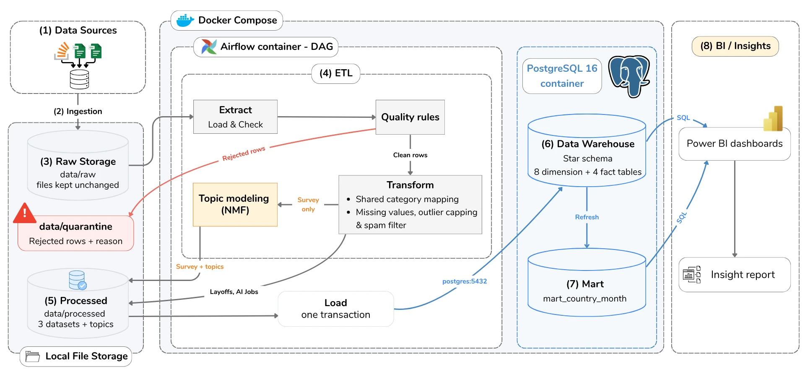
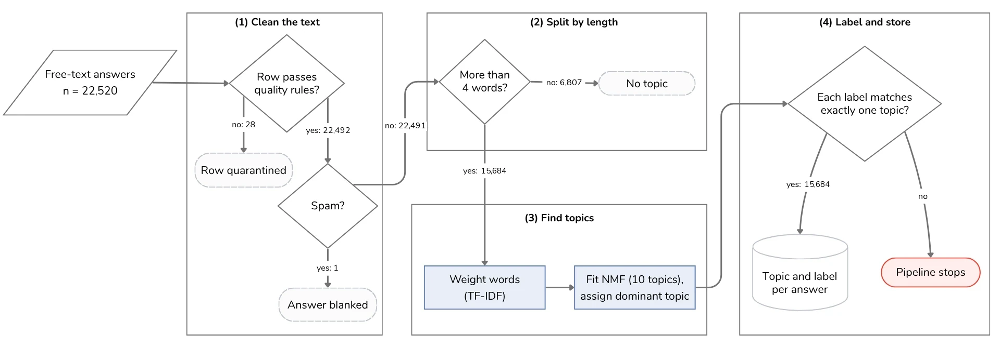
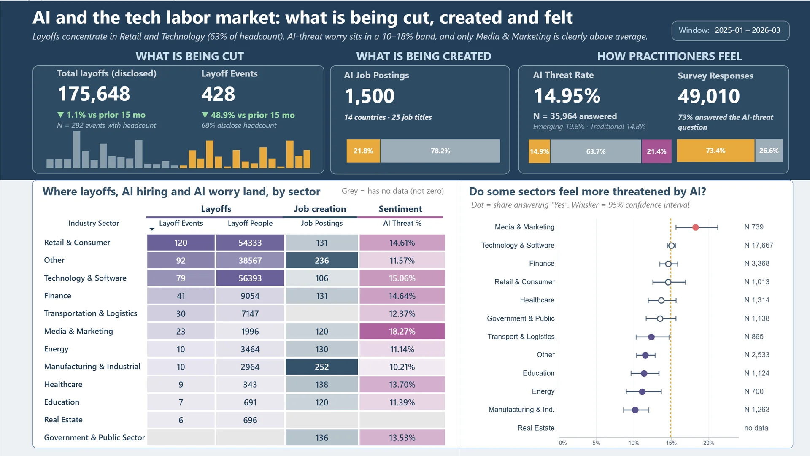
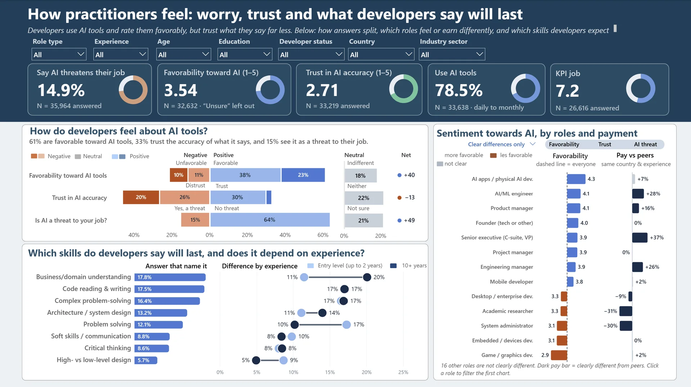
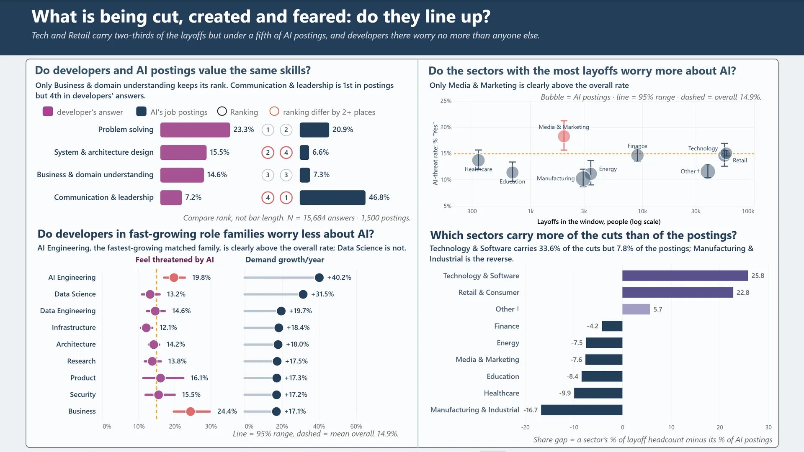

What is being cut
Layoffs.fyi tracker
One row = a layoff event
- 4,600 raw rows
- 2020-03-11 to 2026-09-08
- No role or experience fields
End-to-end Data Engineering + Data Analytics
Three public datasets, three angles on the same shift: a layoff tracker, AI job postings and the 2025 Stack Overflow Developer Survey. They are cleaned, conformed and loaded into one PostgreSQL warehouse, then analyzed in Power BI.
The sources record different things at different grains, so no single file answers the question alone.
What is being cut
One row = a layoff event
What is being created
One row = a job posting
How practitioners feel
One row = a survey respondent
A batch ETL in Python, orchestrated by Airflow and loaded into PostgreSQL, all in Docker Compose. Rejected rows go to quarantine with the rule they failed, never silently dropped.

One pipeline template for all three datasets. Extraction stops if an expected column is missing; 154 unused survey columns are dropped at the source.
24 rules, each tested on real data before adoption. Two plausible rules were rejected because they produced false positives (8.9% and 19.2% of rows).
Country, industry, role, experience and skill are mapped once into shared dimensions. Unknown labels are quarantined, not lumped into a catch-all. Missing values are not imputed.
| Dataset | Raw rows | Quarantined | Loaded | Unaccounted |
|---|---|---|---|---|
| Layoffs | 4,600 | 18 (0.39%) | 4,582 | 0 |
| AI Jobs | 1,500 | 0 (0%) | 1,500 | 0 |
| Survey | 49,123 | 113 (0.23%) | 49,010 | 0 |
| Total | 55,223 | 131 (0.24%) | 55,092 | 0 |
The 18 layoff rows are older copies from 17 duplicate groups (same company, date and location). The 113 survey rows fail the age-to-experience check.
A fact constellation in PostgreSQL 16: three fact tables at different grains share flat conformed dimensions. The DDL is defined once in SQL, and a test keeps the Python mirror of the schema in sync.
fact_layoff_event4,582fact_job_posting1,500fact_survey_response49,010fact_job_posting_skill9,419mart_country_month789dim_date2020–2030dim_country175dim_industry12dim_company2,969dim_role57dim_skill91dim_ai_sentiment641dim_ai_open_topic10ON CONFLICT DO NOTHING; a second load of the same files inserts 0 rows, verified by tests.Row counts are from the first load of the current raw files; dim_date is a continuous calendar keyed YYYYMMDD.
The survey asked developers, in their own words, which skills they expect AI not to replace. 15,684 of those answers were grouped into ten recurring themes, so what people wrote can be counted and compared like any other survey answer.

| Topic | Share | Answers |
|---|---|---|
| Business / domain understanding | 14.7% | 2,301 |
| Code reading & writing | 14.3% | 2,237 |
| AI capability skepticism | 13.4% | 2,098 |
| Complex problem solving | 13.4% | 2,097 |
| Architecture / system design | 10.9% | 1,705 |
| Problem solving | 9.9% | 1,557 |
| Soft skills / communication | 7.2% | 1,135 |
| Critical thinking | 7.1% | 1,112 |
| High- vs low-level design | 4.7% | 733 |
| Skills will remain valuable | 4.6% | 723 |
Share of 15,684 modeled answers, each counted once in its dominant topic. Hover a bar for the count.
What AI won't replace
Asked which skills AI will not replace, developers most often name business and domain understanding (14.7% of answers) and reading and writing code (14.3%), followed by solving complex problems (13.4%). Soft skills and critical thinking come up about half as often, at around 7% each.
Skepticism
13.4% of answers name no skill at all. Instead, they question what AI tools can actually do.
Experience
Among answers that name a skill, developers with 10+ years of experience pick business and domain understanding almost twice as often as entry-level developers (20% against 11%). Entry-level developers lean on problem solving instead (17% against 10%).
Five Power BI dashboards on seven pages. Open a dashboard to see each chart on its own, switch between its pages and try its toggles. Every chart title is a question and its caption the answer; every rate carries its N; segments under 30 records are greyed out; "no data" is drawn grey, never as zero.

All three sourcesOverviewThree KPI groups, a sector grid across the three sources and the AI-threat rate by sector.Open dashboard →
How practitioners feelSentimentUse, favorability, trust and threat; skills expected to last by career stage; attitude and pay by role.Open dashboard →
All three sourcesCross-sourceSkill themes, role families, sector cuts against postings and worry, read side by side.Open dashboard →Business logic lives in SQL views; medians and rates are DAX measures over event- or respondent-grain views, and shares carry 95% Wilson intervals computed in SQL.
The analysis is descriptive. It puts patterns side by side; it does not claim that AI caused any of the layoffs.
What is being cut
In the 2025-01 to 2026-03 window there were 428 events (−48.9% against the prior 15 months) but 175,648 people (−1.1%). The ten largest events hold 54.1% of the window's headcount.
Younger companies cut deeper: the median Seed-stage event removes 100% of staff, falling to 10% for Post-IPO companies. Full shutdowns rose from 8.6% of events in 2020 to 24.0% in 2025.
What is being created
ML Operations (53% a year) and AI Engineering (40%) grow fastest, against about 18% for a typical family. Architecture has the highest median salary of the 12 families yet grows only about 18%.
Seniority is the largest pay lever: $145k at Entry to $238k at Lead (+64%). Python appears in 942 of 1,500 postings and in 77% of AI Engineering postings.
How practitioners feel
78.5% use AI tools at least monthly and 61% are favorable, but 46% distrust their accuracy (net −13). Only 14.9% see AI as a threat to their job (N = 35,964).
Worry is highest among UX, research and UI designers (29%) and data or business analysts (24%). Media & Marketing (18.3%) is the only sector clearly above the average.
Across the nine sectors present in both sources, the three mostly do not line up. Cuts and AI hiring diverge: Technology & Software holds 33.6% of the cuts but 7.8% of the postings. Cuts and worry diverge: the largest cutters sit at the average threat rate, and the rank correlation between layoffs and threat is about 0.28, which is not significant. Growth and worry diverge: AI Engineering, the fastest-growing matched family, reports 19.8% threat against 14.9% overall. Skills only partly agree: of four matched skills, only business and domain understanding keeps its rank.
The sources share only sector and role-family categories, with no company-level link, so this is a finding about these data, not proof that cuts, hiring and worry are independent, and not evidence that AI caused these layoffs.
55k rows fit in single-node memory, so a distributed engine would add cost without benefit.
Enforced keys and constraints, materialized views; a cloud warehouse is not warranted at this scale.
Task dependencies, retries and per-task logs; the whole environment comes up with one command.
Relational model and DAX measures; Vega-Lite visuals for dot plots, dumbbells and maps.
pytest tests in 16 files against a postgres:16 service, plus a DAG-integrity jobmain, feature branches, pull requests with reviewNaN stored as SQL NULL, fixing 17,237 cells an early loader stored as literal textRaw files are not committed. Place them under data/raw/ (see the README), then:
git clone https://github.com/nguyenvietkhoa1409/AI-job-disruption.git
cd AI-job-disruption
cp .env.example .env
docker compose up -d postgres # star schema is created on first start
python -m venv .venv && .venv\Scripts\activate
pip install -r requirements.txt # Python 3.12
python run_pipeline.py # extract, clean, transform -> data/processed/
python -m src.warehouse.loader # load dims -> facts -> bridge, refresh mart
docker compose up -d # optional: Airflow at http://localhost:8080